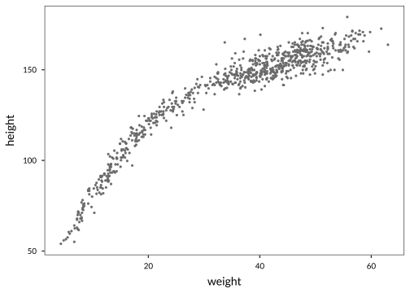

Chapter 4 Functions, lists and loops
4.1 Introduction
This chapter demonstrates some building blocks of programming with R. The objective is to learn skills that help you with batch analyses - repeating similar tasks for many subsets of data, and to write functions to help you organize your code.
For batch analyses, we first have to know how to write our own functions (Section 4.2), so that we can apply the custom function to any new subset of data. This approach results in far less, and much more readable code than copy-pasting similar code for different datasets.
We also delve into “lists” in R (Section 4.3), a versatile data object that you have worked with already - even if you didn’t know it. Understanding lists well in R is the key to more complex analyses, and more readable workflows.
We also take a brief look at ‘for loops’ (Section 4.4), a basic programming utility that we rarely need in R, since almost all functions are vectorized. Sometimes it is however more convenient to use loops, or makes the code just a little more easy to work with.
Finally we introduce many more advanced concepts for writing functions (Section 4.5 and 4.6), often to make functions more versatile and less error-prone.
Packages used in this chapter
We use no new packages in this chapter except the wrapr package. All other functionality is included in base R, or commonly used packages dplyr, ggplot2, lubridate, and lgrdata for the example data.
4.2 Writing functions
We have already used many built-in functions throughout this tutorial, but you can become very efficient at complex data tasks when you write your own simple functions. Writing your own functions can help with tasks that are carried out many times, which would otherwise result in a lot of code.
For example, suppose you frequently convert units from pounds to kilograms. It would be useful to have a function that does this, so you don’t have to type the conversion factor every time. This is also good practice, as it reduces the probability of making typos.
# This function takes a 'weight' argument and multiplies it with some number
# to return kilograms.
poundsToKg <- function(weight){
weight * 0.453592
}We can use this function just like any other in R, for example, let’s convert ‘weight’ to kilograms in the weightloss data.
# Read data
library(lgrdata)
data(weightloss)
# Convert weight to kg.
weightloss$Weight <- poundsToKg(weightloss$Weight)Let’s write a function for the standard error of the mean, a function that is not built-in in R.
# Compute the standard error of the mean for a vector
SEmean <- function(x){
se <- sd(x) / sqrt(length(x))
return(se)
}Here, the function SEmean takes one ‘argument’ called x (i.e., input), which is a numeric vector. The standard error for the mean is calculated in the first line, and stored in an object called se, which is then returned as output. We can now use the function on a numeric vector like this:
## [1] 1.47523## [1] 0.10175564.2.1 Returning results
What if a function should return not just one result, as in the examples above, but many results?
For example, this function computes the standard deviation and standard error of a vector, and returns both stored in a vector. Note that we also use the SEmean function, which we defined above.
# An function that computes the SE and SD of a vector
seandsd <- function(x){
seresult <- SEmean(x)
sdresult <- sd(x)
# Store results in a vector with names
vec <- c(SE = seresult, SD = sdresult)
return(vec)
}
# Test it:
x <- rnorm(100, mean=20, sd=4)
seandsd(x)## SE SD
## 0.4188749 4.18874924.2.2 Functions without arguments
Sometimes, a function takes no arguments (input) at all.
## Hello!We now know enough about writing functions to start using them in many real-world applications, but return to writing more advanced functions in Section 4.5.
First, we take a close look at the most versatile data structure in R : the list.
4.3 Working with lists
Sofar, we have worked a lot with vectors, with are basically strings of numbers or bits of text. In a vector, each element has to be of the same data type. Lists are a more general and powerful type of vector, where each element of the list can be anything at all. This way, lists are a very flexible type of object to store a lot of information that may be in different formats.
Lists can be somewhat daunting for the beginning R user, which is why most introductory texts and tutorials skip them altogether. However, with some practice, lists can be mastered from the start. Mastering a few basic skills with lists can really help increase your efficiency in dealing with more complex data analysis tasks.
To make a list from scratch, you simply use the list function. Here is a list that contains a numeric vector, a character vector, and a dataframe:
4.3.1 Indexing lists
To extract an element from this list, you may do this by its name (‘a’,‘txt’ or ‘dfr’ in this case), or by the element number (1,2,3). For lists, we use a double square bracket for indexing. Consider these examples,
## x y
## 1 2 5
## 2 3 6
## 3 4 7## x y
## 1 2 5
## 2 3 6
## 3 4 7## [1] 1 2 3 4 5 6 7 8 9 10Note that in these examples, the contents of the elements of the list are returned (for ‘dfr’, a dataframe), but the result itself is not a list anymore. If we select multiple elements, the result should still be a list. To do this, use the single square bracket.
Look at these examples:
## [1] 1 2 3 4 5 6 7 8 9 10## $a
## [1] 1 2 3 4 5 6 7 8 9 10## $txt
## [1] "hello" "world"
##
## $dfr
## x y
## 1 2 5
## 2 3 6
## 3 4 74.3.2 Converting lists to dataframes or vectors
Although lists are the most flexible way to store data and other objects in larger, more complex, analyses, ultimately you would prefer to output as a dataframe or vector.
Let’s look at some examples using do.call(rbind,...) and unlist.
# A list of dataframes:
dfrlis <- list(data1=data.frame(a=1:3,b=2:4), data2=data.frame(a=9:11,b=15:17))
dfrlis## $data1
## a b
## 1 1 2
## 2 2 3
## 3 3 4
##
## $data2
## a b
## 1 9 15
## 2 10 16
## 3 11 17# Since both dataframes in the list have the same number of columns and names,
# we can 'successively row-bind' the list like this:
do.call(rbind, dfrlis)## a b
## data1.1 1 2
## data1.2 2 3
## data1.3 3 4
## data2.1 9 15
## data2.2 10 16
## data2.3 11 17# A list of vectors:
veclis <- list(a=1:3, b=2:4, f=9:11)
# In this case, we can use the 'unlist' function, which will
# successively combine the three vectors into one:
unlist(veclis)## a1 a2 a3 b1 b2 b3 f1 f2 f3
## 1 2 3 2 3 4 9 10 11In real-world applications, some trial-and-error will be necessary to convert lists to more pretty formats.
4.3.3 Combining lists
Combining two lists can be achieved using c(), like this:
## $a
## [1] 1 2 3
##
## $b
## [1] 2 3 4
##
## $f
## [1] 9 10 11
##
## $q
## [1] 17 16 154.3.4 Extracting output from built-in functions
One reason to gain a better understanding of lists is that many built-in functions return not just single numbers, but a diverse collection of outputs, organized in lists. Think of the linear model function (lm), it returns a lot of things at the same time (not just the p-value).
Let’s take a closer look at the lm output to see if we can extract the adjusted R\(^2\).
# Read data
data(allometry)
# Fit a linear model
lmfit <- lm(height ~ diameter, data=allometry)
# And save the summary statement of the model:
lmfit_summary <- summary(lmfit)
# We already know that simply typing 'summary(lmfit)' will give
# lots of text output. How to extract numbers from there?
# Let's look at the structure of lmfit:
str(lmfit_summary)## List of 11
## $ call : language lm(formula = height ~ diameter, data = allometry)
## $ terms :Classes 'terms', 'formula' language height ~ diameter
## .. ..- attr(*, "variables")= language list(height, diameter)
## .. ..- attr(*, "factors")= int [1:2, 1] 0 1
## .. .. ..- attr(*, "dimnames")=List of 2
## .. .. .. ..$ : chr [1:2] "height" "diameter"
## .. .. .. ..$ : chr "diameter"
## .. ..- attr(*, "term.labels")= chr "diameter"
## .. ..- attr(*, "order")= int 1
## .. ..- attr(*, "intercept")= int 1
## .. ..- attr(*, "response")= int 1
## .. ..- attr(*, ".Environment")=<environment: R_GlobalEnv>
## .. ..- attr(*, "predvars")= language list(height, diameter)
## .. ..- attr(*, "dataClasses")= Named chr [1:2] "numeric" "numeric"
## .. .. ..- attr(*, "names")= chr [1:2] "height" "diameter"
## $ residuals : Named num [1:63] -8.84 1.8 0.743 2.499 4.37 ...
## ..- attr(*, "names")= chr [1:63] "1" "2" "3" "4" ...
## $ coefficients : num [1:2, 1:4] 7.5967 0.5179 1.4731 0.0365 5.157 ...
## ..- attr(*, "dimnames")=List of 2
## .. ..$ : chr [1:2] "(Intercept)" "diameter"
## .. ..$ : chr [1:4] "Estimate" "Std. Error" "t value" "Pr(>|t|)"
## $ aliased : Named logi [1:2] FALSE FALSE
## ..- attr(*, "names")= chr [1:2] "(Intercept)" "diameter"
## $ sigma : num 5.55
## $ df : int [1:3] 2 61 2
## $ r.squared : num 0.768
## $ adj.r.squared: num 0.764
## $ fstatistic : Named num [1:3] 202 1 61
## ..- attr(*, "names")= chr [1:3] "value" "numdf" "dendf"
## $ cov.unscaled : num [1:2, 1:2] 7.05e-02 -1.54e-03 -1.54e-03 4.32e-05
## ..- attr(*, "dimnames")=List of 2
## .. ..$ : chr [1:2] "(Intercept)" "diameter"
## .. ..$ : chr [1:2] "(Intercept)" "diameter"
## - attr(*, "class")= chr "summary.lm"# The output of lm is a list, so we can look at the names of # that list as well:
names(lmfit_summary)## [1] "call" "terms" "residuals" "coefficients"
## [5] "aliased" "sigma" "df" "r.squared"
## [9] "adj.r.squared" "fstatistic" "cov.unscaled"So, now we can extract results from the summary of the fitted regression. Also look at the help file ?summary.lm, in the section ‘Values’ for a description of the fields contained here.
To extract the adjusted R\(^2\), for example:
## [1] 0.7639735## [1] 0.7639735This sort of analysis will be very useful when we do many regressions, and want to summarize the results in a table.
lm fit (that is, compare it to what summary(lmfit) shows on screen).
4.3.5 Creating lists from dataframes
For more advanced analyses, it is often necessary to repeat a particular analysis many times, for example for sections of a dataframe.
Using the allom data for example, we might want to split the dataframe into three dataframes (one for each species), and repeat some analysis for each of the species. One option is to make three subsets (using subset), and repeating the analysis for each of them. But what if we have hundreds of species?
A more efficient approach is to split the dataframe into a list, so that the first element of the list is the dataframe for species 1, the 2nd element species 2, and so on. In case of the allom dataset, the resulting list will have three components.
Let’s look at an example on how to construct a list of dataframes from the allom dataset, one per species:
## [1] TRUE## [1] "PIMO" "PIPO" "PSME"# Now use 'split' to construct a list:
allomsp <- split(allometry, allometry$species)
# The length of the list should be 3, with the names equal to the
# original factor levels:
length(allomsp)## [1] 3## [1] "PIMO" "PIPO" "PSME"allomsp[[2]] is identical to taking a subset of allom of the second species in the dataset (where ‘second’ refers to the second level of the factor variable species, which you can find out with levels).
Let’s look at an example using the hydro data. The data contains water levels of a hydrodam in Tasmania, from 2005 to 2011.
# Read hydro data, and convert Date to a proper date class.
data(hydro)
library(lubridate)
library(dplyr)
hydro <- mutate(hydro,
Date = dmy(Date),
year = year(Date))
# Look at the Date range:
range(hydro$Date)## [1] "2005-08-08" "2011-08-08"# Let's get rid of the first and last years (2005 and 2011) since they are incomplete
hydro <- filter(hydro, !year %in% c(2005,2011))
# Now split the dataframe by year. This results in a list, where every
# element contains the data for one year:
hydrosp <- split(hydro, hydro$year)
# Properties of this list:
length(hydrosp)## [1] 5## [1] "2006" "2007" "2008" "2009" "2010"To extract one element of the two lists that we created (allomsp and hydrosp), recall the section on indexing lists.
4.3.6 Applying functions to lists
We will introduce two basic tools that we use to apply functions to each element of a list: sapply and lapply. The lapply function always returns a list, whereas sapply will attempt to simplify the result. When the function returns a single value, or a vector, sapply can often be used. In practice, try both and see what happens!
4.3.6.1 Using sapply
First let’s look at some simple examples:
# Let's make a simple list with only numeric vectors (of varying length)
numlis <- list(x=1000, y=c(2.1,0.1,-19), z=c(100,200,100,100))
# For the numeric list, let's get the mean for every element, and count
# the length of the three vectors.
# Here, sapply takes a list and a function as its two arguments,
# and applies that function to each element of the list.
sapply(numlis, mean)## x y z
## 1000.0 -5.6 125.0## x y z
## 1 3 4You can of course also define your own functions, and use them here. Let’s look at another simple example using the numlis object defined above.
For example,
# Let's find out if any diameters are duplicated in the allom dataset.
# A function that does this would be the combination of 'any' and 'duplicated',
anydup <- function(vec)any(duplicated(vec))
# This function returns TRUE or FALSE
# Apply this function to numlis (see above):
sapply(numlis, anydup)## x y z
## FALSE FALSE TRUE# You can also define the function on the fly like this:
sapply(numlis, function(x)any(duplicated(x)))## x y z
## FALSE FALSE TRUENow, you can use any function in sapply as long as it returns a single number based on the element of the list that you used it on. Consider this example with strsplit.
# Recall that the 'strsplit' (string split) function usually returns a list of values.
# Consider the following example, where the data provider has included the units in
# the measurements of fish lengths. How do we extract the number bits?
fishlength <- c("120 mm", "240 mm", "159 mm", "201 mm")
# Here is one solution, using strsplit
strsplit(fishlength," ")## [[1]]
## [1] "120" "mm"
##
## [[2]]
## [1] "240" "mm"
##
## [[3]]
## [1] "159" "mm"
##
## [[4]]
## [1] "201" "mm"# We see that strsplit returns a list, let's use sapply to extract only
# the first element (the number)
splitlen <- strsplit(fishlength," ")
sapply(splitlen, function(x)x[1])## [1] "120" "240" "159" "201"The main purpose of splitting dataframes into lists, as we have done above, is so that we can save time with analyses that have to be repeated many times. In the following examples, you must have already produced the objects hydrosp and allomsp (from examples in the previous section).Both those objects are lists of dataframes, that is, each element of the list is a dataframe in itself. Let’s look at a few examples with sapply first.
## PIMO PIPO PSME
## 19 22 22# Here, we applied the 'nrow' function to each separate dataframe.
# (note that there are easier ways to find the number of observations per species!,
# this is just illustrating sapply.)
# Things get more interesting when you define your own functions on the fly:
sapply(allomsp, function(x)range(x$diameter))## PIMO PIPO PSME
## [1,] 6.48 4.83 5.33
## [2,] 73.66 70.61 69.85# Here, we define a function that takes 'x' as an argument:
# sapply will apply this function to each element of the list,
# one at a time. In this case, we get a matrix with ranges of the diameter per species.
# How about the correlation of two variables, separate by species:
sapply(allomsp, function(x)cor(x$diameter, x$height))## PIMO PIPO PSME
## 0.9140428 0.8594689 0.8782781# For hydro, find the number of days that storage was below 235, for each year.
sapply(hydrosp, function(x)sum(x$storage < 235))## 2006 2007 2008 2009 2010
## 0 18 6 0 04.3.6.2 Using lapply
The lapply function is much like sapply, except it always returns a list.
For example,
## $`2006`
## Date storage year
## Min. :2006-01-02 Min. :411.0 Min. :2006
## 1st Qu.:2006-04-01 1st Qu.:449.5 1st Qu.:2006
## Median :2006-06-29 Median :493.0 Median :2006
## Mean :2006-06-29 Mean :514.3 Mean :2006
## 3rd Qu.:2006-09-26 3rd Qu.:553.8 3rd Qu.:2006
## Max. :2006-12-25 Max. :744.0 Max. :2006
##
## $`2007`
## Date storage year
## Min. :2007-01-01 Min. :137.0 Min. :2007
## 1st Qu.:2007-04-02 1st Qu.:223.0 1st Qu.:2007
## Median :2007-07-02 Median :319.0 Median :2007
## Mean :2007-07-02 Mean :363.2 Mean :2007
## 3rd Qu.:2007-10-01 3rd Qu.:477.0 3rd Qu.:2007
## Max. :2007-12-31 Max. :683.0 Max. :2007
##
## $`2008`
## Date storage year
## Min. :2008-01-07 Min. :202.0 Min. :2008
## 1st Qu.:2008-04-05 1st Qu.:267.8 1st Qu.:2008
## Median :2008-07-03 Median :345.0 Median :2008
## Mean :2008-07-03 Mean :389.5 Mean :2008
## 3rd Qu.:2008-09-30 3rd Qu.:551.8 3rd Qu.:2008
## Max. :2008-12-29 Max. :637.0 Max. :2008
##
## $`2009`
## Date storage year
## Min. :2009-01-05 Min. :398.0 Min. :2009
## 1st Qu.:2009-04-04 1st Qu.:467.0 1st Qu.:2009
## Median :2009-07-02 Median :525.5 Median :2009
## Mean :2009-07-02 Mean :567.6 Mean :2009
## 3rd Qu.:2009-09-29 3rd Qu.:677.8 3rd Qu.:2009
## Max. :2009-12-28 Max. :791.0 Max. :2009
##
## $`2010`
## Date storage year
## Min. :2010-01-04 Min. :251.0 Min. :2010
## 1st Qu.:2010-04-03 1st Qu.:316.0 1st Qu.:2010
## Median :2010-07-01 Median :368.5 Median :2010
## Mean :2010-07-01 Mean :428.5 Mean :2010
## 3rd Qu.:2010-09-28 3rd Qu.:577.5 3rd Qu.:2010
## Max. :2010-12-27 Max. :649.0 Max. :2010Suppose you have multiple similar datasets in your working directory, and you want to read all of these into one list, use lapply like this (run this example yourself and inspect the results).
# Names of your datasets:
filenames <- c("pupae.csv","pupae.csv","pupae.csv")
# (This toy example will read the same file three times).
# Read all files into one list,
alldata <- lapply(filenames, read.csv)
# Then, if you are sure the datasets have the same number of columns and names,
# use do.call to collapse the list:
dfrall <- do.call(rbind, alldata)dir to list files, and even to find files that match a specific pattern (see Section 1.8. Read all CSV files in your working directory (or elsewhere) into a single list, and count the number of rows for each dataframe.
Finally, we can use lapply to do all sorts of complex analyses that return any kind of object. The use of lapply with lists ensures that we can organize even large amounts of data in this way.
Let’s do a simple linear regression of log(leafarea) on log(diameter) for the Allometry dataset, by species:
# Run the linear regression on each element of the list, store in a new object:
lmresults <- lapply(allomsp, function(x)lm(log10(leafarea) ~ log10(diameter), data=x))
# Now, lmresults is itself a list (where each element is an object as returned by lm)
# We can extract the coefficients like this:
sapply(lmresults, coef)## PIMO PIPO PSME
## (Intercept) -0.3570268 -0.7368336 -0.3135996
## log10(diameter) 1.5408859 1.6427773 1.4841361# This shows the intercept and slope by species.
# Also look at (results not shown):
# lapply(lmresults, summary)
# Get R2 for each model. First write a function that extracts it.
getR2 <- function(x)summary(x)$adj.r.squared
sapply(lmresults, getR2)## PIMO PIPO PSME
## 0.8738252 0.8441844 0.6983126sapply and lapply by using lapply in some of the examples where we used sapply (and vice versa).
4.4 Loops
Loops can be useful when we need to repeat certain analyses many times, and it is difficult to achieve this with lapply or sapply. To understand how a for loop works, look at this example:
## 1## 2## 3## 4## 5Here, the bit of code between {} is executed five times, and the object i has the values 1,2,3,4 and 5, in that order. Instead of just printing i as we have done above, we can also index a vector with this object:
# make a vector
myvec <- round(runif(5),1)
for(i in 1:length(myvec)){
message("Element ", i, " of the vector is: ", myvec[i])
}## Element 1 of the vector is: 0.1## Element 2 of the vector is: 0.8## Element 3 of the vector is: 0## Element 4 of the vector is: 0.4## Element 5 of the vector is: 0.6Note that this is only a toy example: the same result can be achieved by simply typing myvec.
One common application of for loops in R arises when producing multiple plots in a pdf.
Consider this template (make your own working example based on any dataset).
We assume here you have a dataframe called ‘dataset’ with a factor ‘species’, for which you want to create separate plots of Y vs. X.
pdf("somefilename.pdf", onefile=TRUE)
for(lev in levels(dataset$species)){
with(subset(dataset, species==lev),
plot(X,Y,
main=as.character(lev)))
}
dev.off()Here, we have to call dev.off() to close the pdf. This sort of use of dev.off() after a block of code is dangerous, instead use the approach outlined in Section 4.6.4 and place the code inside a function.
4.4.1 Better indexing
In the first example with for loops, we used 1:length(myvec) to make indices for the for loop. This is fine when you know for sure myvec exists and isn’t NULL or NA (in which case the indices will not be what you expect - try it out!).
A safer alternative in for loops is to use seq_along like in the following example. Here we substitute different parts of a string using a for loop.
mystring <- "A fish called Wanda"
replacements <- c("fish","called","Wanda")
for(i in seq_along(replacements)){
print(gsub(replacements[i], "dog", mystring))
}## [1] "A dog called Wanda"
## [1] "A fish dog Wanda"
## [1] "A fish called dog"Now, when you place code similar to the above in a more generic function, you don’t have to worry when replacements is empty for some reason, the for loop will simply be skipped.
4.5 Functions : advanced concepts
4.5.1 Why should I write more functions?
Organizing your complex work flow into many custom functions, instead of long scripts with just the raw code, has some key advantanges:
Using functions makes it clear what the inputs are, and what are the outputs. For example, if you run
result <- myfunction(mydata), you know thatmydatawas used to createresult. Instead, if you place all your code plain in a script and usesource("myscript.R"), what objects are created? Are there any output? If so, where? Using functions this way allows a logical flow of your scripts.Using functions is much safer because objects created in the body of the function when it is executed only live for as long as the function is running (in the function scope). Once the function returns a result, all objects inside the function become cease to exist (see Memory (Advanced R) by Hadley Wickham). This means the objects do not use memory, and cannot cause conflicts with other objects in the session.
Using functions allows you to avoid any duplicated code. Duplicated code is terrible because when you want to modify your code, you have to repeat the modification (and remember where!). As a rule of thumb, if you do something 3 times, you should write a function. This function can also take some arguments, allowing it to do slightly different operations from different calls.
For different projects, you often find yourself using the same bits of code, for example to read certain data, format a certain table, or make some plot. It quickly makes sense to collect this sort of code into a collection of your own functions. When these functions become generic enough (applicable in many projects), you should consider bundling them in an R package.
4.5.2 Wrapper functions
We often need to write simple functions that adjust one or two arguments to other functions. For example, suppose we often make plots with filled circles, with our favorite color (“dimgrey”) :
We could of course always specify these arguments, or we can write a function that sets those defaults. It would look like the following, except this function is incomplete, since we have hardcoded the other plotting arguments (the dataset, and the x and y variables):
# This function is not how we want it yet!
plot_filled_grey <- function(){
plot(age, height, data=howell, pch=19, col="dimgrey")
}We would like to be able to call the function via plot_filled_grey(age, height, data=howell), in other words all arguments to our wrapper function should be passed to the underlying function. We have a very handy utility in R to do this, the three dots (...) :
The function now works as intended. It can be further improved if we realize that the plotting color cannot be changed - it is always “dimgrey”. We want the default value to be “dimgrey”, but with an option to change it. This can be achieved like so,
Here, col=col sets the color in the call to plot with the default value specified in the wrapper function (“dimgrey”), but the user can also change it as usual.
plot_filled_grey function above, test it on some data, and modify it so that the plotting symbol can also be changed, but has a default value of 19.
4.5.3 Wrapper functions to ggplot2 or dplyr
In the previous section we saw how to write wrapper functions, functions that change a few arguments to some other function. These sort of functions are very helpful because we can save a lot of space by reusing a certain template. Suppose we want to make a plot with ggplot2, a simple scatter plot. We can achieve this via (result not shown),
data(howell)
library(ggplot2)
ggplot(howell, aes(x = weight, y = height)) +
geom_point(size = 0.8, col = "dimgrey") +
stat_smooth(method = "loess", span = 0.7, col="black")We already used quite a bit of code for this simple plot, but imagine you have set various other options, formatting changes, axis limits and so on - you end up with a lot of code for one plot. If we want to reuse the code for another plot, for two other variables from the same dataframe, copy-pasting the code and modifying leads to even more code.
Writing wrapper functions for ggplot2 (or dplyr, see below, or many other cases) is more difficult because the arguments in the ggplot2 code we want to change (height and weight) are not quoted - they are variables inside a dataframe (howell in our case).
Suppose we have defined somewhere (perhaps as arguments in a function) that the following two variables should be used for the plot:
If we use the same code as in the previous example, it does not work because the variable names need to be not quoted. The following (rather obscure) syntax converts the quoted variable name, to a variable to be found within the provided data.
library(lgrdata)
data(howell)
ggplot(howell, aes(x = !!sym(xvar), y = !!sym(yvar))) +
geom_point(size = 0.8, col = "dimgrey")
We can now write a wrapper function for a ggplot2 plot. The same approach works for many other similar wrapper functions, for example around dplyr operations.
# Make a scatter plot with the howell data.
plot_scatter_howell <- function(xcol, ycol){
ggplot(howell, aes(x = !!sym(xcol), y = !!sym(ycol))) +
geom_point(size = 0.8, col = "dimgrey")
}
# The function can be used with quoted names:
plot_scatter_howell("height", "weight")To also pass the dataset as an argument (making the function more general), we do not have to use any special syntax, but can immediately set it as an argument. The special syntax only applies when we are looking for variables in a dataframe.
4.5.4 Functions that take vectors as input
Many functions in R are vectorized, which means you can send a vector as an argument and the function will be automatically evaluated for each element of the vector. For example:
## [1] 10## [1] 10 2 6Not all functions are vectorized, and when you write your own more complex functions you will often run into situations where you would like an argument to be vectorized but run into difficulty.
Take the following example:
# A complex calculation.
# If x is less than "change_val" (default 5),
# return the product, otherwise the sum.
multiplex <- function(x, change_val = 5){
if(x < change_val){
prod(1:x)
} else {
sum(1:x)
}
}
# This should give 4*3*2*1
multiplex(4)## [1] 24A function like this is really only useful if it is vectorized over x, but it does not work as intended:
## Warning in if (x < change_val) {: the condition has length > 1 and only the
## first element will be used## Warning in 1:x: numerical expression has 2 elements: only the first used## [1] 24## Warning in if (x < change_val) {: the condition has length > 1 and only the
## first element will be used## [1] 15You have at least 3 ways to vectorize any function. If you are only interested in vectorizing one argument at a time, you can use sapply as we have seen before:
## [1] 24 36For more than one argument at a time you can use the flexible mapply, which allows us to specify the arguments to the function as vectors or lists:
# First call multiplex(x=4, change_val = 3), then
# multiplex(x=8, change_val = 7)
mapply(multiplex, x = c(4,8), change_val = c(3,7))## [1] 10 36Using mapply you can write your own wrapper functions (4.5.2) quite easily. If this is too much work for you, consider using the rather magical Vectorize (which really is itself a wrapper around mapply):
## [1] 24 36Inspect ?Vectorize to find that you can specify which arguments will be vectorized, and whether to simplify the result (which works akin to sapply, making a vector or a matrix of a result where possible).
A final option is to write a recursive function that wraps around itself, executing the function once when the argument is not vectorized, and otherwise using sapply or mapply to return a vector of results:
multiplex3 <- function(x, change_val = 5){
# Make the calculation when a single argument given:
if(length(x) == 1){
if(x < change_val){
prod(1:x)
} else {
sum(1:x)
}
} else {
# Otherwise use mapply, each time calling *this function*,
# recursively.
mapply(multiplex3, x = x, change_val = change_val)
}
}
multiplex3(c(4,8))## [1] 24 36This final solution can be found in many base R functions, and is a flexible - but more advanced - interface to allow vectorized arguments.
4.5.5 If, then, else … switch
We have already seen the basic if statement in many examples, which can be extended with multiple else if statements:
# NOT an elegant use of multiple if statements.
animal_weight <- function(animal){
if(animal == "cat"){
weight <- 10
} else if(animal == "cow"){
weight <- 1000
} else if(animal == "mouse"){
weight <- 1
} else if(animal == "dog"){
weight <- 20
}
return(weight)
}
animal_weight("dog")## [1] 20The use of many if statements like this cause a lot of repetitive code. Usually if you have many if then else statements, you can either think of a simpler design for your function, or you can use switch where appropriate:
animal_weight <- function(animal){
weight <- switch(animal,
mouse = 1,
cat = 10,
dog = 20,
cow = 1000,
NA) # Return NA if the animal is not one of those above
return(weight)
}Here switch improves the readability of the code a lot. If you want to switch a numeric input, switch is perhaps not the best solution.
If you find yourself writing code like this:
# An input value
num <- 3
# DO NOT do this.
switch(as.character(num),
"1" = "Door number one.",
"2" = "Door number two.",
"3" = "Door number three."
)## [1] "Door number three."Then you are overthinking this! The above can be accomplished with basic indexing:
## [1] "Door number three."num as an argument, and the noun (here, “Door”) as an optional second argument with a default value.
4.6 Robust functions: defensive programming
Once you write more functions that perhaps become more generic and widely applicable within your projects, you want these functions to be more robust, that is, to fail less often and more elegantly. Functions fail if the wrong inputs were provided to them (by a careless programmer or data faults), or if some (rare) exception is reached. In this section we will look at a few tools to help you write more robust functions.
4.6.1 Argument matching
Returning to our animal_weight function from the previous section,
# A slightly shorter version of animal_weight().
animal_weight <- function(animal){
switch(animal,
mouse = 1,
cat = 10,
dog = 20,
cow = 1000,
NA)
}Here the last argument to switch indicates the value to return if the animal does not match any of the above. What if instead we want the function to stop and return a message if the value of the argument is not supported by the function? We can use match.arg, as follows:
# Define animal_weight2 as a function which only allows 4 types of animal:
animal_weight2 <- function(animal = c("mouse","cat","dog","cow")){
animal <- match.arg(animal)
switch(animal,
mouse = 1,
cat = 10,
dog = 20,
cow = 1000)
}
# Now see what happens when we give a wrong animal:
animal_weight2("giraffe")The output of the above will be:
Error in match.arg(animal) :
'arg' should be one of "mouse", "cat", "dog", "cow"Using match.arg resulted in a very clear error message. This sort of message makes it easy to find the source of the error.
A side-effect of using match.arg is that it performs partial matching, meaning you can also call the function with only part of the argument value, for example try animal_weight("mo"). Personally I dislike partial matching as it rarely benefits us, but can cause problems that are hard to find. Probably best to not rely on it in any real code, though it can help save a few key strokes.
4.6.2 Argument checking
Many functions expect a certain argument type, and make no sense or will fail when other argument types are provided. The function below make a sentence into sentence case, with the first letter of each word capitalized.
sentence_case <- function(x){
stopifnot(is.character(x))
w <- sapply(strsplit(x, " "), function(ch){
substr(ch,1,1) <- toupper(substr(ch,1,1))
return(ch)
})
paste(w, collapse = " ")
}Now this function call works fine,
## [1] "Breaking News: Man Arrested For Everything"But this one does not (try it out yourself!).
4.6.3 Sending warnings, errors, messages
In more complex projects, it can be difficult to find which part of your code caused an error or unexpected result. Leaving useful messages, warnings, or exiting when you know things will go wrong later can be very useful in developing more debuggable code.
example_function_warnings <- function(data){
stopifnot(is.vector(data))
if(length(data) > 1000){
warning("This might take a while!")
}
if(length(data) == 0){
stop("Data is empty")
}
if(all(is.na(data))){
message("Only missing data sent to example_function_warnings()")
}
# actually do something
# ...
}The use of message is nice to provide some indication to you where code was executed. Scattering a messages around your code (with an indication where we are in the code) can be invaluable during development of more complex projects, with lots of functions.
Sometimes you want fewer warnings or messages, for example arising from code that works fine but always produces an annoying warning. You can switch them off with these two functions:
## NULLsuppressWarnings({
# Code here with warnings you want to suppress.
# Don't use this unless you know what you are doing!
})## NULL4.6.4 Executing code when the function ends (or fails)
A useful tool to make functions more robust (less likely to fail) is to safely run some code when the function exits unexpectedly. One example arises with sending figures to an open PDF document: after we are done, the PDF needs to be closed with dev.off() (see Example in Section 4.4).
In this example, we have written a function that makes a simple plot in a pdf:
# Plot first 2 columns of a dataset against each other, make a PDF.
plot_first_2_columns <- function(data, output = "plot.pdf"){
pdf(output)
plot(data[[1]], data[[2]])
dev.off()
}This is OK, but what if we send a dataset with just one column, or some other corrupted data or wrong argument? The pdf will be opened but not closed, because plot(data...) will cause an error, causing the function to exit (and not run the rest of the code).
A better implementation uses on.exit, like so:
4.6.5 Catch errors with try
The ultimate tool to make functions more robust is try, a mechanism to catch errors and avoid termination of your code.
First we show the use of try, a flexible interface, like so:
# A wrapper around log(), avoiding an error when the input is bad,
# and instead returning a missing value.
safe_logarithm <- function(x){
out <- try(log(x))
# If log(x) caused an error, out will be a special
# object with class 'try-error'
if(inherits(out, "try-error")){
return(NA)
}
out
}Now safe_logarithm("a") returns NA, but you do see the error message printed (unless you look around ?try for a way to suppress the error message).
The same thing can be achieved with tryCatch :
## [1] NAHere, we have to define a function (with argument e, which contains the error message) for the error. Similarly, functions can be defined that will be called when warnings arise in the code (warning = function(w)w), or neither (finally).
4.6.6 Writing database wrapper functions
This example combines various concepts from this section, and is a useful set of functions when you commonly work with databases. First review Section about the DBIpackage to access data from databases. The functions below will be developed step-by-step. Please carefully review this section if you want to adapt this code to your situation.
After we are done reading and writing to a (usually remote) database, the connection to it should be closed with dbDisconnect (in the DBI package). Sometimes we forget, or code fails, or whatever - leaving extra connections open that can cause various problems (especially in production-ready code).
The following example can be modified to suite your needs :
# A function to make a connection to your database
# Now, instead of copying this bit of code to all your scripts, you
# define the function once and run con <- db_connection()
db_connection <- function(){
DBI::dbConnect(drv = PostgreSQL(),
user = "mjvgsdzg",
password = "my_password",
host = "balarama.db.elephantsql.com",
port = 5432,
dbname = "mjvgsdzg")
}
# A function to open a database connection, read and return data:
read_my_data <- function(tablename, ...){
con <- db_connection()
on.exit(dbDisconnect(con))
data <- dbReadTable(con, tablename, ...)
}With the above read_my_data you can read your favorite table from a database, simply with mydata <- read_my_data("cooldatatable"). However, this is a poor function if you are planning to read many tables from this database in a short time, then it makes sense to keep the connection open the entire time (especially for remote databases, as is common).
The following improvement allows passing a connection object, or creating it if it was not passed as an argument:
read_my_data2 <- function(tablename, con = NULL, ...){
if(missing(con)){
con <- db_connection()
on.exit(dbDisconnect(con))
}
data <- dbReadTable(con, tablename, ...)
}Now we can do,
my_con <- db_connection()
flowers <- read_my_data2("flower", con = my_con)
eggs <- read_my_data2("eggs", con = my_con)
butter <- read_my_data2("butter", con = my_con)
milk <- read_my_data2("milk", con = my_con)
dbDisconnect(my_con)If we leave out the con argument, the connection will be opened and closed for you every time you call read_my_data2.
4.7 Exercises
4.7.1 Writing functions
Write a function that adds two numbers, and divides the result by 2.
You learned in Section 2.7.4 that you can take subset of a string using the
substrfunction. First, using that function to extract the first 2 characters of a bit of text. Then, write a function calledfirstTwoCharsthat extracts the first two characters of any bit of text.Write a function that checks if there are any missing values in a vector (using
is.naandany). The function should returnTRUEif there are missing values, andFALSEif not.Improve the function so that it tells you which of the values are missing, if any (Hint:use the
whichfunction). You can usemessageto write messages to the console.The function
readlinecan be used to ask for data to be typed in. First, figure out how to usereadlineby reading the corresponding help file. Then, construct a function calledgetAgethat asks the user to type his/her age. (Hint: check the examples in thereadlinehelp page).hard Recall the functions
headandtail. Write a function calledmiddlethat shows a few rows around (approx.) the ‘middle’ of the dataset. Hint: usenrow,print, and possiblyfloor.
4.7.2 Working with lists
First read the following list:
veclist <- list(x=1:5, y=2:6, z=3:7)Using
sapply, check that all elements of the list are vectors of the same length. Also calculate the sum of each element.Add an element to the list called ‘norms’ that is a vector of 10 numbers drawn from the standard normal distribution.
Using the
pupaedata, use a \(t\)-test to find if PupalWeight varies with temperature treatment, separate for the two CO\(_2\) treatments (so, do two \(t\)-tests). You must usesplitandlapply.For this exercise use the
coweetadata - a dataset with measurements of tree size. Split the data byspecies, to produce a list calledcoweeta_sp. Keep only those species that have at least 10 observations. (Hint: first count the number of observations per species, save that as a vector, find which are at least 10, and use that to subscript the list.) If you don’t know how to do this last step, skip it and continue to the next item.Using the split Coweeta data, perform a linear regression of
log10(biomass)onlog10(height), separately by species. Uselapply.
4.7.3 Functions for histograms
First run this code to produce two vectors.
x <- rnorm(100)
y <- x + rnorm(100)Run a linear regression y = f(x), save the resulting object. Look at the structure of this object, and note the names of the elements. Extract the residuals and make a histogram.
Hard. From the previous question, write a function that takes an
lmobject as an argument, and plots a histogram of the residuals.
4.7.4 Using functions to make many plots
Read the cereals data. Create a subset of data where the
Manufacturerhas at least two observations (usetableto find out which you want to keep first). Don’t forget to drop the empty factor level you may have created!Make a single PDF with six plots, with a scatter plot between potassium and fiber for each of the six (or seven?) Manufacturers. (Hint: ook at the template for producing a PDF with multiple pages at the bottom of Section 4.4.
4.7.5 Monthly weather plots
For the HFE weather dataset (
hfemet2008) that makes a scatter plot between PAR (a measure of light intensity) and VPD (a measure of the dryness of air).Then, split the dataset by month (recall Section 4.3.5), and make twelve such scatter plots. Save the result in a single PDF, or on one page with 12 small figures.